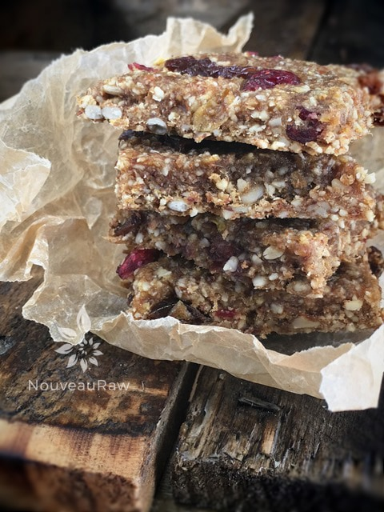

Apple Raisin Cranberry Bars
~ raw, vegan, gluten-free, Paleo ~
Have you ever woke up expecting to accomplish a particular task, but the winds shift in your day, and you end up doing something different? Or you go to the store on a mission to purchase just one item, and you come home with bags of groceries, and as you unpack the bags you realize that you forgot to buy that one item that you specifically went to the store for in the first place?
There is a Buddhist saying that I once heard that went something like this…”All pain comes from attachment to a specific outcome.” Today, I am not so sure I experienced pain, but I sure had a different outcome in mind when I started playing in the kitchen.
I had great intentions of creating a raw strawberry cake, but instead, these beautiful, lovely, unintentional Almond Raisin Apple Bars came into being. :) Though there was a smidgen of disappointment in my “cake making,” I can smile with satisfaction knowing that not one ingredient went to waste, and something new was born.
Get the Flavor on
These Apple Raisin Cranberry Bars are packed with the juicy flavor of freshly picked apples inside a wholesome and delicious bar based in almonds, cinnamon, and nutmeg. You won’t find any additional sugars in this treat. All the sweetness comes from whole-fruit sweeteners such as dates, raisins, and cranberries. They would make for a beautiful breakfast bar or mid-afternoon pick-me-up snack. You won’t need to worry about topping them with anything… they are perfect on their own. I hope you enjoy this recipe. I would love to hear how it goes. Blessings, amie sue
- 2 cups raw almond flour
- 1 tsp ground Ceylon cinnamon
- 1/4 tsp Himalayan pink salt
- 1/8 tsp ground nutmeg
- 2 medium zucchini, peeled and rough chopped
- 3/4 cup date paste
- 1 large organic apple, cored & roughly chopped
- 3 Tbsp cold-pressed raw coconut oil, melted
- 1 tsp fresh lemon juice
- 1/2 cup raw sunflower seeds, soaked
- 1/2 cup raisins
- 1/2 cup dried cranberries
Topping:
- Extra diced raisins and cranberries
Preparation:
- Place the almonds, cinnamon, salt, and nutmeg in the food processor and blend until it makes a mealy/powdery flour.
- It won’t be as fine flour as you might be used to with white flour, but it shouldn’t have any large pieces in it.
- Be gentle with it, if you over-process it, you will be on your way to making nut butter.
- Don’t use wet soaked almonds in this process. Your almonds should already have been soaked and dehydrated.
- I added the spices to almonds since they are all dry ingredients, and this will help disperse them evenly in the batter.

In your food processor, fitted with the “S” blade, add zucchini, apple, date paste, coconut oil, and lemon juice. Process until nice and smooth, roughly 30 seconds, making sure to scrape sides as needed.
- Now, this could your time to change things up a bit; you could make the batter more chunky by cutting back on the processing time, you could add different nuts or dried fruit. You could even process the dried fruits and nuts with the batter making it a well-blended batter.
- Place the batter on the non-stick teflex sheet that comes with your dehydrator. Spread evenly and square up the edges
- I spread mine 1/4″ thick, and it was 12 x 12″ square.
- If you don’t have non-stick sheets, you can use parchment paper, but NOT wax paper, as it will stick.
- Score into desired shapes and sizes. I used a pizza cutter for this.
- Optional: sprinkle coarse sea salt on top along with diced cranberries and raisins. With the palm of your hand, LIGHTLY press them in.
- Dehydrate at 145 degrees (F) for 1 hour, then reduce to 115 degrees (F) for 8-10 hours. I took mine out when they had a nice and chewy consistency.
- Once cooled, place in an air-tight container for freshness. I put mine in the fridge to extend their shelf life.
The Institute of Culinary Ingredients™
- Dates are a fantastic ingredient for raw food recipes, click (here) to read why.
- Why do I specify Ceylon cinnamon? Click (here) to learn why.
- What is Himalayan pink salt, and does it matter? Click (here) to read more about it.
Culinary Explanations:
- Why do I start the dehydrator at 145 degrees (F)? Click (here) to learn the reason behind this.
- When working with fresh ingredients, it is essential to taste test as you build a recipe. Learn why (here).
- Don’t own a dehydrator? Learn how to use your oven (here). I do, however honestly believe that it is a worthwhile investment. Click (here) to learn what I use.
© AmieSue.com